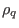
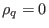
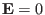
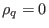
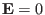

Force balance equation in tokamak plasmas:
Grad-Shafranov equation
Next, we consider what constraints the force balance imposes on the
axisymmetric magnetic field discussed above. The momentum equation of plasmas
is given by
where , ,
 ,
,
 ,
, and
,
, and
 are mass density, charge density, thermal pressure tensor,
current density, electric field, and magnetic field, respectively. The
electric field force
are mass density, charge density, thermal pressure tensor,
current density, electric field, and magnetic field, respectively. The
electric field force
 is usually ignored due to either
 or
. Further assuming there is no plasma flow and
the plasma pressure is isotropic, the steady state momentum equation (force
balance equation) is written
is usually ignored due to either
 or
. Further assuming there is no plasma flow and
the plasma pressure is isotropic, the steady state momentum equation (force
balance equation) is written
where  is the scalar plasma pressure.
is the scalar plasma pressure.
Subsections
yj
2018-03-09